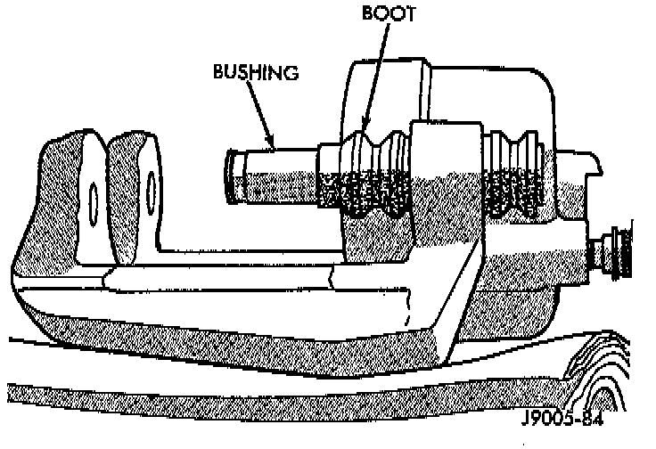
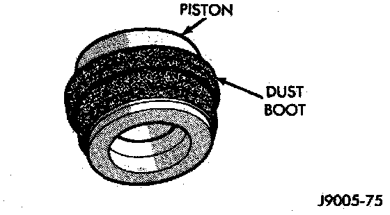
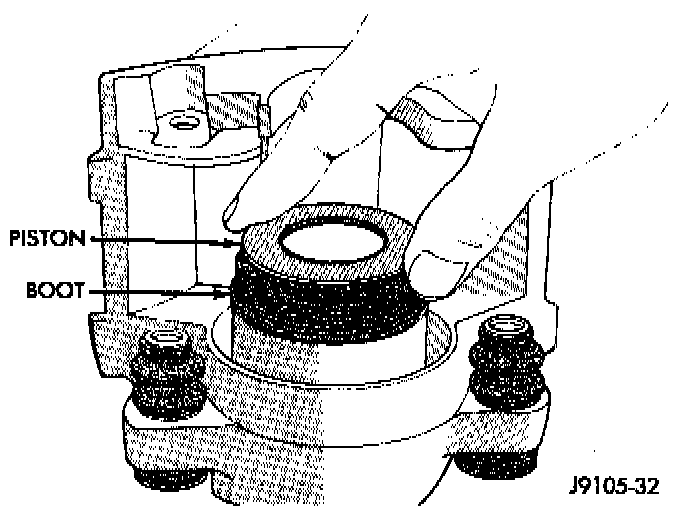
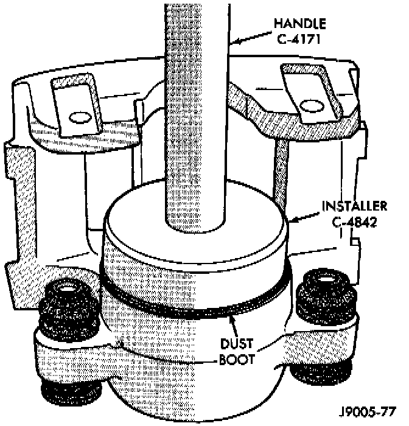

Assembly
1. Coat caliper piston bore, new piston seal and piston with clean brake fluid.2. Lubricate caliper bushings and interior of bushing boots with Dielectric Silicone grease.
Bushings And Boots Installation:

3. Install bushing boots in caliper, then insert bushing into boot and push bushing into place.
Seal Installation:

4. Install new piston seal into seal groove with finger.
Piston And Dust Boot:

5. Install dust boot on caliper piston and seat boot in piston groove.
Caliper Piston Installation:

6. Press piston into caliper bore by hand, use a turn and push motion to work piston into seal.
7. Press caliper piston to bottom of bore.
Piston Dust Boot Installation:

8. Seat dust boot in caliper with Installer Tool C-4842 and Tool Handle C-4171, or equivalents.
9. Replace caliper bleed screw if removed.